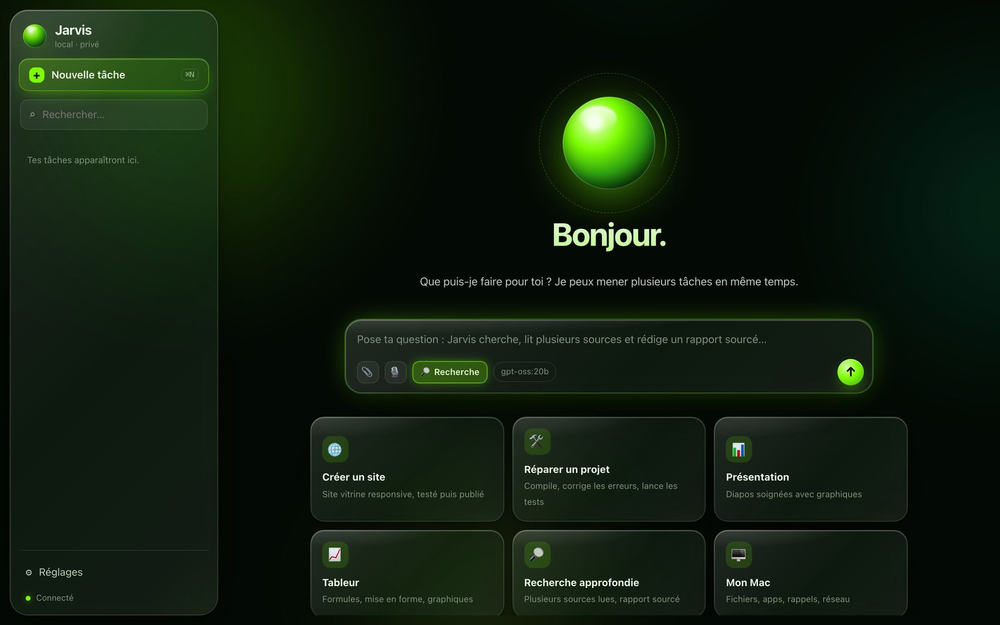

iOS
Dans Safari, choisissez Partager → Sur l’écran d’accueil, puis « Ouvrir comme app web » si proposé.
Ouvrir sur iPhoneVotre assistant.
Sur votre appareil.
Je développe Jarvis pour expérimenter la conversation et les outils locaux. Avec Jarvis Local, le modèle s’exécute sur votre téléphone ou votre ordinateur. L’application est gratuite, sans compte ni abonnement.

Ouvrez Jarvis dans le navigateur indiqué ci-dessous, installez l’application, puis choisissez et chargez un modèle depuis son écran d’accueil.
Dans Safari, choisissez Partager → Sur l’écran d’accueil, puis « Ouvrir comme app web » si proposé.
Ouvrir sur iPhoneDans le menu de Chrome, choisissez Installer l’application ou « Ajouter à l’écran d’accueil ».
Ouvrir sur AndroidUtilisez Ajouter au Dock dans Safari, ou le bouton d’installation de Chrome ou Edge. Aucun moteur à installer séparément.
Ouvrir sur MacDans le menu d’Edge ou de Chrome, choisissez Installer l’application.
Ouvrir sur WindowsSmolLM2 135M · environ 140 Mo. Le plus léger pour commencer. Il répond surtout en anglais ; son français est limité.
Qwen3 0.6B · environ 628 Mo. Plus adapté au français, il demande davantage de mémoire et de temps de calcul.
Comptez environ 23 Mo supplémentaires pour le moteur et l’interface. La mémoire nécessaire pendant l’utilisation dépasse la taille du téléchargement. Ces petits modèles peuvent produire des réponses inexactes et ne remplacent pas les grands modèles de bureau.
Le premier téléchargement nécessite Internet et contacte GitHub Pages et Hugging Face. Une fois l’application et le modèle enregistrés, Jarvis peut être rechargé hors connexion. Aucun ordinateur distant n’a besoin de rester allumé.
Les messages et l’historique restent dans le navigateur. Vous pouvez les effacer dans les réglages. Si le navigateur libère son stockage, le modèle devra être téléchargé à nouveau.
Consulter les tests et les limitesL’édition originale associe Ollama et MLX à une interface native. Elle explore les tâches, les fichiers et les intégrations macOS. Ses fonctions et ses prérequis sont distincts de ceux de Jarvis Local.
Configuration requise : Mac Apple Silicon, macOS 14 ou version ultérieure, 16 Go de RAM et 30 Go d’espace libre. Homebrew et les outils Apple sont nécessaires. L’installateur télécharge les dépendances et compile l’application sur votre Mac.
L’application n’est pas notariée par Apple : macOS peut bloquer son ouverture. L’installation complète sur un Mac neuf n’a pas encore été validée. Les fonctions web et le renfort cloud facultatif nécessitent Internet.
L’édition Mac peut modifier vos fichiers. Utilisez un dossier de test et consultez les limites connues dans la notice avant de l’installer.

Les prochaines étapes
Objectifs de développement, sans date de sortie annoncée.
Améliorer la lisibilité du chargement des modèles, la stabilité des conversations et les retours de l’interface pendant le calcul.
En préparationFaciliter l’installation et poursuivre les essais sur macOS, Windows, iOS et Android. Les formats natifs restent à confirmer ; la version web est disponible aujourd’hui.
En préparation